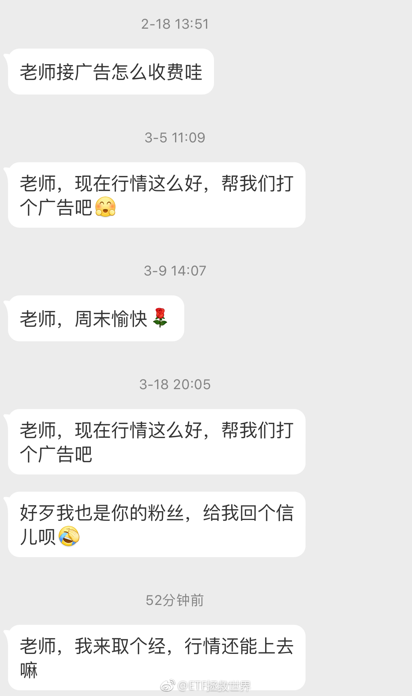
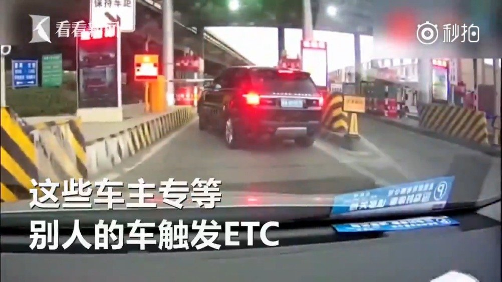

回复@4-water:不好说。还有几十个喷子也天天刷，好姑娘让他们骗走了怎么办//@4-water:在这里征婚比较靠谱的 起码大家都踏踏实实的//@ETF拯救世界:回复@小w今天吃鸡了吗:这个可以有。免费！//@小w今天吃鸡了吗:可以打征婚广告吗 e大@ETF拯救世界:万万没想到广告商已经不关心投广告的事了… 
回复@小w今天吃鸡了吗:这个可以有。免费！//@小w今天吃鸡了吗:可以打征婚广告吗 e大//@ETF拯救世界:回复@Aircdre:每天十几个要打广告的回不过来//@Aircdre:E大就回人家个消息吧@ETF拯救世界:万万没想到广告商已经不关心投广告的事了…
回复@生如夏花Chp:今年计划出去玩一个多月。去一个遥远的国度。//@生如夏花Chp:益达中午说要出去旅游，下午就跳水，喷了@ETF拯救世界:另外，鉴于这次波段操作比较成功，加上未来A股仓位继续上升，我会将波段仓位比重加大。用来应对未来也许会出现的波动大涨幅小的局面。但是因为计划是一个长线计划，加上它的特殊性，不可能用太多笔墨在这上面，算是锦上添花吧。
另外，鉴于这次波段操作比较成功，加上未来A股仓位继续上升，我会将波段仓位比重加大。用来应对未来也许会出现的波动大涨幅小的局面。但是因为计划是一个长线计划，加上它的特殊性，不可能用太多笔墨在这上面，算是锦上添花吧。
我们不能像有些人一样2400点瑟瑟发抖拿着现金嘟囔着世界末日就要来了；也不能像有些人3100疯了一样拿着钞票加着杠杆往里面冲喊着大牛市。我们永远冷静，永远客观。默默的看着疯子们潮起潮落，咱们弯腰捡钱。就这么简单。再次提醒，两个月没买了。舒服。
回复@小贝和皮皮:因为说上证非常直观。如果我说300支撑位3600或者500支撑位5000，你真能反应过来要跌多少吗？//@小贝和皮皮:弱弱问一句，益达应该以前说过不要看沪指，因为失真，为啥支撑位还是依据护指，不是比如中证500@ETF拯救世界:我能尽量做到不错过大底，不追在山顶，也能尽量做到波段仓位吃大波段。但我没法做到全部筹码吃每一个小波段。希望达到这个效果的立即取关，去找能做到的人关注吧。
回复@叨叨door:我的系统显示支撑在2900左右。如果能到，我们的右侧仓位会在那里上车。如果不能到——就算了呗。//@叨叨door:能跌破3000点么？@ETF拯救世界:我能尽量做到不错过大底，不追在山顶，也能尽量做到波段仓位吃大波段。但我没法做到全部筹码吃每一个小波段。希望达到这个效果的立即取关，去找能做到的人关注吧。
回复@solonblue:问题在于，你纠结和不纠结，结果有什么不同呢。可以抓住吗。//@solonblue:每次来这里看益达的帖子, 都提醒自己要有大格局 不要纠结几个点@ETF拯救世界:我能尽量做到不错过大底，不追在山顶，也能尽量做到波段仓位吃大波段。但我没法做到全部筹码吃每一个小波段。希望达到这个效果的立即取关，去找能做到的人关注吧。
罚10万，关6个月，上征信，十年不许上高速，吊销驾照五年不许考。@北京人不知道的北京事儿:【专坑ETC车主！强行变道还倒车，花别人的钱上高速】最近，山东德州高速路段出现了一批专蹭ETC的车主。警方表示，此举十分危险，不仅影响了人身安全，还会造成追尾等严重交通事故。蹭ETC进入或离开高速的违规车辆将被拉入黑名单并无法通行全国高速；相关违规车辆在出高速时将按无卡进行处理：即按全线高速最远距离进行收费。平安出行的微博视频 143万次播放 01:29
回复@捉迷藏music:首先你得有收益率最高的品种可晒。你有没有想过为什么那么多大神PS交易软件截图，修改成本价，不惜冒着身败名裂的风险作假？//@捉迷藏music:话说炒个股的，如果只把收益率最高的几笔交易晒出来也是大神吧？买彩票的、赌博的如果只把收益率最高的几次晒出来更是大神了@ETF拯救世界:我希望照顾到每位朋友的情绪，让大家都感受到被我尊重和重视，但是因为人太多了，不可能所有人都照顾到。包括私信啊，生日祝福啊，考试祝福啊，娶妻生子祝福啊等等。我看到的一定会回复，但有时候忙看不到也请见谅。我一定是尊重每位朋友的。还有，就是如果我认为您和我的三观不合，或者不怀好意，都会拉黑。为的是节省我们大家的时间，也为了我自己能保持一个良好的心情。如果把您拉黑了，也请理解。总之我们尽量让对方舒服。如果不，那么就好聚好散，你说多好。
我有一事不明：为什么那么多人喜欢看特别堵心的电视剧。刚看有人说看到某电视剧结局一直哭一直哭，一路看着也是一直气的不得了。我是真不懂，为什么啊。爱看这种。现实中的糟心事还不够多吗？还要在休闲的时候继续给自己添堵？看点轻轻松松的又或者激烈刺激哪怕怪力乱神的放松一下不好吗。不理解。